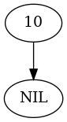

Red-Black Trees: Delete
Table of Contents
This is a post on deletings nodes from a tree. It is part of a series of posts starting with this post.
The Deleter For the Arborist
This adds a property to the Arborist that builds a Deleter object for it.
@property
def delete(self) -> Deleter:
"""A node deleter"""
if self._delete is None:
self._delete = Deleter(tree=self.tree)
return self._delete
The Deleter
The Deleter deletes nodes from a Tree, maintaining the Red-Black Tree Properties.
Extra Imports
from bowling.data_structures.red_black_tree.forester import Forester
The Class
class Deleter:
"""Deletes nodes
Args:
tree: the RedBlackTree to update
"""
def __init__(self, tree: rb_tree.RedBlackTree) -> None:
self._tree = None
self.tree = tree
self._forester = None
self._rotate = None
return
The Tree Setter
@tree.setter
def tree(self, sapling: rb_tree.RedBlackTree) -> None:
"""stores the tree, resets other objects that used the prior tree"""
self._tree = sapling
self._rotate = None
self._forester = None
return
Forester
@property
def forester(self) -> Forester:
"""A forester to measure the tree"""
if self._forester is None:
self._forester = Forester(tree=self.tree)
return self._forester
Transplant
\begin{algorithm}
\caption{RBTransplant}
\begin{algorithmic}
\INPUT The Tree, the original node and node to replace it
\PROCEDURE{RBTransplant}{\textit{T}, \textit{u}, \textit{v}}
\IF {\textit{u}.p = \textit{T}.\textsc{NIL}}
\STATE \textit{T}.root $\gets$ \textit{v}
\ELSEIF {\textit{u} = \textit{u}.p.left}
\STATE \textit{u}.p.left $\gets$ \textit{v}
\ELSE
\STATE \textit{u}.p.right $\gets$ \textit{v}
\ENDIF
\STATE \textit{v}.p $\gets$ \textit{u}.p
\ENDPROCEDURE
\end{algorithmic}
\end{algorithm}
def transplant(self, unwanted: rb_tree.Node,
replacement: rb_tree.Node) -> None:
"""Replace one node with another in the tree
Gives replacement the parent of replaced, doesn't remove
parent from replaced
Args:
unwanted: node to remove
replacement: node to replace replaced
"""
if unwanted.is_root:
self.tree.root = replacement
elif unwanted.is_left:
unwanted.parent.left = replacement
else:
unwanted.parent.right = replacement
replacement.parent = unwanted.parent
return
Delete
\begin{algorithm}
\caption{RBDelete}
\begin{algorithmic}
\INPUT The Tree and the node to remove
\PROCEDURE{RBTransplant}{\textit{T}, \textit{z}}
\STATE \textit{y} $\gets$ \textit{z}
\STATE \textit{y-original-color} $\gets$ \textit{y}.color
\IF {\textit{z}.left = \textit{T}.\textsc{NIL}}
\STATE \textit{x} $\gets$ \textit{z}.right
\STATE \textsc{RBTransplant}(\textit{T}, \textit{z}, \textit{z}.right)
\ELSEIF {\textit{z}.right = \textit{T}.\textsc{NIL}}
\STATE \textit{x} $\gets$ \textit{z}.left
\STATE \textsc{RBTransplant}(\textit{T}, \textit{z}, \textit{z}.left)
\ELSE
\STATE \textit{y} $\gets$ \textsc{TreeMinimum}(\textit{z}.right)
\STATE \textit{y-original-color} $\gets$ \textit{y}.color
\STATE \textit{x} $\gets$ \textit{y}.right
\IF {\textit{y}.p = \textit{z}}
\STATE \textit{x}.p $\gets$ \textit{y}
\ELSE
\STATE \textsc{RBTransplant}(\textit{T}, \textit{y}, \textit{y}.right)
\STATE \textit{y}.right $\gets$ \textit{z}.right
\STATE \textit{y}.right.p $\gets$ \textit{y}
\ENDIF
\STATE \textsc{RBTransplant}(\textit{T}, \textit{z}, \textit{y})
\STATE \textit{y}.left $\gets$ \textit{z}.left
\STATE \textit{y}.left.p $\gets$ \textit{y}
\STATE \textit{y}.color $\gets$ \textit{z}.color
\ENDIF
\IF {\textit{y-original-color} = \textbf{BLACK}}
\STATE \textsc{RBDeleteFixup}(\textit{T}, \textit{x})
\ENDIF
\ENDPROCEDURE
\end{algorithmic}
\end{algorithm}
def delete(self, unwanted: rb_tree.Node) -> None:
"""Delete a node
Args:
unwanted: the node to delete
"""
needs_fixing = unwanted.is_black
if unwanted.left is rb_tree.LEAF:
unwanted_child = unwanted.right
self.transplant(unwanted, unwanted_child)
elif unwanted.right is rb_tree.LEAF:
unwanted_child = unwanted.left
self.transplant(unwanted, unwanted_child)
else:
adopter = self.forester.min(unwanted.right)
needs_fixing = unwanted.is_black
unwanted_child = adopter.right
if adopter.parent is unwanted:
unwanted_child.parent = adopter
else:
self.transplant(adopter, unwanted_child)
adopter.right = unwanted.right
adopter.right.parent = adopter
self.transplant(unwanted, adopter)
adopter.left = unwanted.left
adopter.left.parent = adopter
adopter.color = unwanted.color
if needs_fixing:
self.fixup(unwanted_child)
return
The Fixup
\begin{algorithm}
\caption{RBFixup}
\begin{algorithmic}
\INPUT The Tree and the node to check
\PROCEDURE{RBFixup}{\textit{T}, \textit{x}}
\WHILE {\textit{x} $\neq$ \textit{T}.root and \textit{x} = \textbf{BLACK}}
\IF {\textit{x} = \textit{x}.p.left}
\textit{w} $\gets$ \textit{x}.p.right
\IF \textit{w}.color = \textbf{RED}
\STATE \textit{w}.color $\gets$ \textbf{BLACK}
\STATE \textit{x}.p.color $\gets$ \textbf{RED}
\STATE \textsc{LeftRodate}(\textit{T}, \textit{x}.p)
\STATE \textit{w} $\gets$ \textit{x}.p.right
\ENDIF
\IF { \textit{w}.left.color = \textbf{BLACK} and \textit{w}.right.color = \textbf{BLACK}}
\STATE \textit{w}.color $\gets$ \textbf{RED}
\STATE \textit{x} $\gets$ \textit{x}.p
\ELSE
\IF { \textit{w}.color=\textbf{BLACK}}
\STATE \textit{w}.left.color $\gets$ \textbf{BLACK}
\STATE \textit{w}.color $\gets$ \textbf{RED}
\STATE \textsc{RightRotate}(\textit{T}, \textit{w})
\STATE \textit{w} $\gets$ \textit{x}.p.right
\ENDIF
\STATE \textit{w}.color $\gets$ \textit{x}.p.color
\STATE \textit{x}.p.color $\gets$ \textbf{BLACK}
\STATE \textit{w}.right.color $\gets$ \textbf{BLACK}
\STATE \textsc{LeftRotate}(\textit{T}, \textit{x}.p)
\STATE \textit{x} $\gets$ \textit{T}.root
\ENDIF
\ELSE
// Same as x is left but with left and right swapped
\ENDIF
\ENDWHILE
\STATE \textit{x}.color $\gets$ \textbf{BLACK}
\ENDPROCEDURE
\end{algorithmic}
\end{algorithm}
def fixup(self, node: rb_tree.Node)-> None:
"""Fixup the tree after a node deletion
Args:
node: the child of the deleted node
"""
while not node.is_root and node.is_black:
self.fixup_one_side(node, left=node.is_left)
node.color = rb_tree.Color.BLACK
return
Fixup One Side
def fixup_one_side(self, node: rb_tree.Node, left: bool=True) -> None:
"""Does either the case where the node is left or node is right"""
child = node.parent.right if left else node.parent.left
if child.is_red:
child.color = rb_tree.Color.BLACK
node.parent.color = rb_tree.Color.BLACK
rotate = self.rotate.left if left else self.rotate.right
rotate(node.parent)
child = node.parent.right if left else node.parent.left
if child.left.is_black and child.right.is_black:
child.color = rb_tree.Color.RED
node = node.parent
else:
if child.is_black:
grandchild = child.left if left else child.right
grandchild.color = rb_tree.Color.BLACK
child.color = rb_tree.Color.RED
rotate = self.rotate.right if left else self.rotate.left
rotate(child)
child = node.parent.right if left else node.parent.left
child.color = node.parent.color
node.parent.color = rb_tree.Color.BLACK
grandchild = child.right if left else child.left
grandchild.color = rb_tree.Color.BLACK
rotate = self.rotate.left if left else self.rotate.right
rotate(node.parent)
node = self.tree.root
return
Testing
# pypi
from expects import be, be_true, expect
# software under test
from bowling.data_structures.red_black_tree import tree
from bowling.data_structures.red_black_tree.arborist import Arborist
from bowling.data_structures.red_black_tree.forester import Forester
Transplant
The Node is Root
original = tree.Node(10)
replacement = tree.Node(11)
arborist = Arborist(tree.RedBlackTree(original))
arborist.delete.transplant(original, replacement)
expect(arborist.tree.root).to(be(replacement))
expect(replacement.is_root).to(be_true)
The Original Node Is a Left Child
root = tree.Node(12)
root.left = original
arborist.tree.root = root
arborist.delete.transplant(original, replacement)
expect(root.left).to(be(replacement))
expect(replacement.parent).to(be(root))
The Original Node is a Right Child
original.key = 15
root.right = original
replacement.key = 20
arborist.tree.root = root
arborist.delete.transplant(original, replacement)
expect(root.right).to(be(replacement))
expect(replacement.parent).to(be(root))
Delete
A Build-Up and a Tear Down
# python
from pathlib import Path
# pypi
import networkx
SLUG = "red-black-trees-delete"
OUTPUT = Path(f"files/posts/{SLUG}")
if not OUTPUT.is_dir():
OUTPUT.mkdir()
def preorder(node: tree.Node, adjacencies: dict) -> dict:
"""Traverse the nodes and build an adjancency dictionary
"""
if node is not None:
left = node.left.key if node.left else None
right = node.right.key if node.right else None
if any((left, right)):
if left and right:
adjacencies[node.key] = (left, right)
elif left and not right:
adjacencies[node.key] = (left, )
else:
adjacencies[node.key] = (right,)
preorder(node.left, adjacencies)
preorder(node.right, adjacencies)
return
def plot_graph(root, name):
adjacencies = {}
preorder(root, adjacencies)
graph = networkx.DiGraph(adjacencies)
pygraph = networkx.nx_pydot.to_pydot(graph)
filename = f"{name}.png"
filepath = OUTPUT/filename
pygraph.write_png(filepath)
print(f"[[img-url:{filename}]]")
return
node = tree.Node(10)
plot_graph(node, "node_1")

Sources
The Main Source:
The Clearer RB-Insert-Fixup Pseudocode:
- Design and Analysis of Algorithms: Red-Black Trees [Internet]. [cited 2022 Mar 23]. Available from: https://gcallah.github.io/algorithms/RedBlackTrees.html